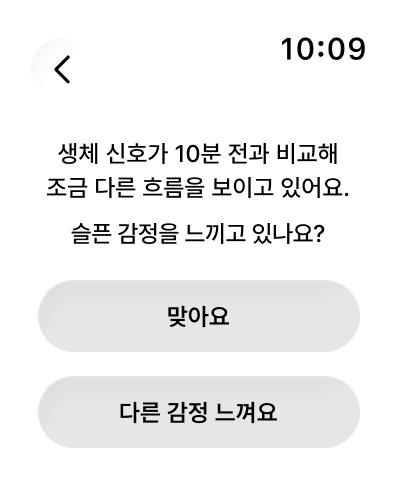
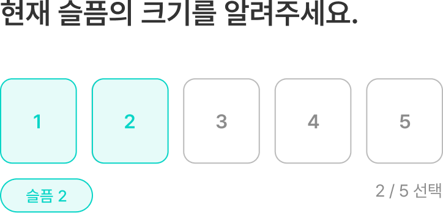
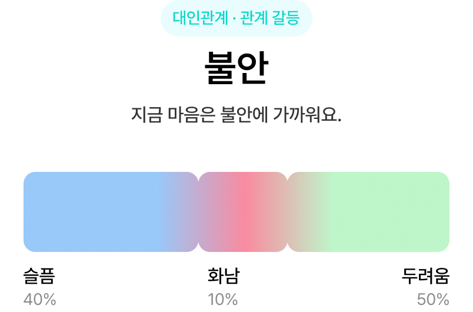
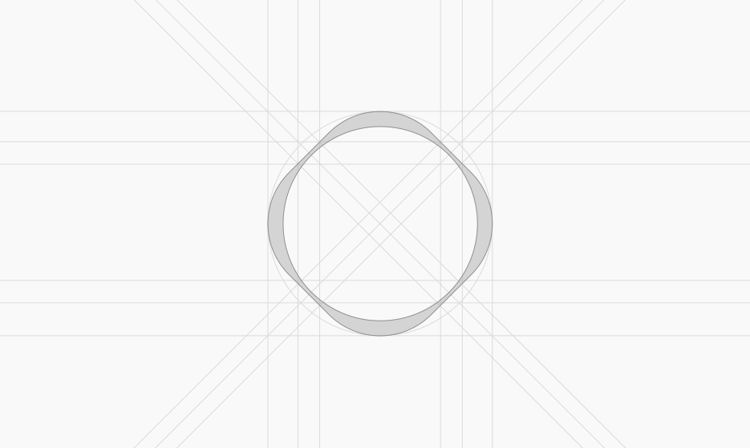
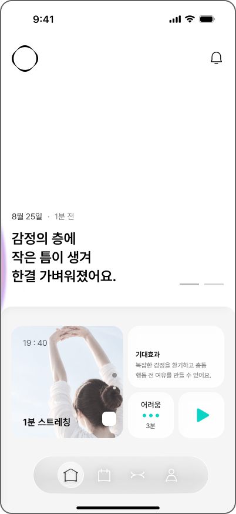
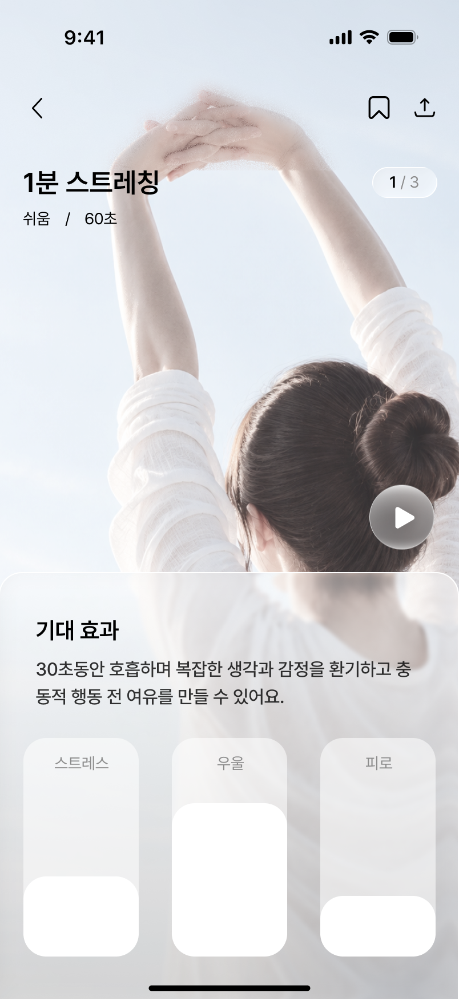
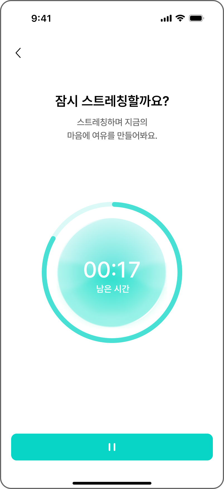

Value
CORE VALUE
생체 신호의 변화를 바탕으로 복합적인 감정을 시각화해, 사용자가 자신의 상태를 직관적으로 이해하도록 돕습니다. 평소와 다른 신체 변화가 감지되면 알림으로 현재 감정과 충동의 강도를 확인하고, 행동 전 잠시 멈춰 대안을 살펴보도록 합니다. 축적된 감정과 충동 행동 기록, 케어 결과를 분석해 개인별 패턴을 파악하고 일상에서 실천할 맞춤형 회복 행동을 상황에 맞게 꾸준히 제안합니다.
emora의 브랜드 컬러는 터콰이즈 라이트, 터콰이즈 블루, 민트 그린을 중심으로 구성합니다. 밝고 부드러운 라이트 톤과 선명한 터콰이즈 블루의 대비에 민트 그린을 더해 산뜻하고 안정적인 인상을 형성합니다. 또한 색상의 밝기와 단계별 변화를 활용해 화면 전반에 일관되고 자연스러운 컬러 흐름
시각화된
Visualized
즉각적인
Immediate
03
02
01
개인화된
Personalized
Brand
BRAND IDENTITY
BRAND IDENTITY
emora의 브랜드 컬러는 터콰이즈 라이트, 터콰이즈 블루, 민트 그린을 중심으로 구성합니다. 밝고 부드러운 라이트 톤과 선명한 터콰이즈 블루의 대비에 민트 그린을 더해 산뜻하고
MINT GREEN
TURQUOISE LIGHT → BLUE
Check
A DETECT · CHECK
워치 알림에서
시작하는 감정 확인
STEP 01
Sensing

사용자는 생체 신호의 변화를 감지하고, 평소와 다른 흐름이 나타나면 알림을 통해 현재 감정 상태를 확인합니다. 이를 통해 감정 변화의 시작을 인지합니다.
STEP 02
Check

슬픔 2
2 / 5 선택
사용자는 현재 감정의 크기를 선택하고, 감정이 발생한 상황과 관련 요인을 단계별로 확인해 현재 마음에 영향을 준 맥락을 구체적으로 파악합니다.
STEP 03
Result

선택한 감정과 강도, 발생 상황을 바탕으로 현재 마음 상태와 감정 비율을 시각화하고, 상세 결과와 함께 개인에게 맞는 케어 3가지를 제안합니다.
EMORA
감정과 행동 사이,
작은 틈.
02
emora
emotion color
user
custom color
Truth
신뢰
Joy
기쁨
Fear
두려움
Sadness
슬픔
Disgust
역겨움
Anger
화
Anticipation
기대
Surprise
놀람
색상 선택
08
09
DESIGN CONCEPT
감정처럼 흐르고,
유리처럼 투명하게
비치는 유리, 그라데이션, 자연스레 두 요소가 겹치고 합쳐져 감정이 쌓이고 풀리는 과정을 부드럽고 투명한 질감으로
표현하여 마음이 움직이는 순간을 시각적으로 전달합니다.
01 GRADIENT LAYER
Flexible
유연한
감정에 따라 농도와
두께가 변하는 레이어
02 COLOR · SOFT UI
Soft
부드러운
둥근 모서리, 낮은 대비의
경계와 그라데이션
03 GLASS · FLOW
Connected
연결된
카드 단위 정보가 하나의
흐름으로 이어지는 화면
Features
KEY FEATURES
워치의 생체 신호 변화를 감지해 현재 감정과 충동을 확인하도록 돕습니다. 상황에 맞는 회복 행동을 제안하고, 케어 전후 변화를 기록해 반복 패턴을 살펴봅니다. 축적된 기록을 바탕으로 맞춤 케어를 제공하고, 서클에서 응원과 공감을 나누며 건강한 감정 관리 습관을 형성하도록 돕습니다.
FLOW
Detect → Check → Recover → Manage → Share
감지 · 확인 · 회복 · 기록 · 공유
1 / 3
생체 신호가 10분 전과 비교해
조금 다른 흐름을 보이고 있어요.
슬픈 감정을 느끼고 있나요?
맞아요
다른 감정 느껴요
FIG. 01 — 감정 확인
FIG. 02 — 회복 행동
FIG. 03 — 변화 · 패턴 확인
CORE VALUE
감정 상태를 확인하고
충동을 점검하는 체크 시스템
감정 · 강도와 상황, 충동 유형 · 크기를 선택해 현재 감정 상태를 확인하고, 감정과 충동 행동의 연결을 파악해 대응 방향을 찾습니다.
CORE VALUE
지금 이 순간
나에게 필요한 케어
emora는 사용자에게 맞는 케어를 제안합니다. 짧은 호흡과 가벼운 움직임 등 여유를 만들고 마음의 리듬을 정돈하도록 돕습니다.
CORE VALUE
매일의 감정을 모아
나를 이해하기
emora는 하루의 감정과 충동을 기록합니다. 쌓인 기록으로 감정 흐름을 살펴보고, 나의 상태와 반복 패턴까지 돌아볼 수 있습니다.
Layer
DESIGN CONCEPT
감정은 색으로 쌓이고,
자연스럽게 이어지도록
감정은 상황에 따라 지속되거나 반복되고, 다른 감정으로 퍼지거나 갑작스럽게 변화합니다. emora는 이러한 감정의 흐름을 네 가지 레이어 유형으로 구분하고, 각기 다른 형태와 그라데이션으로 감정의 특징을 시각화해 한눈에 이해하도록 돕습니다.
07
01
평상시 기본적으로 나타나는 형태
특별한 감정 변화가 감지되지 않은 평상시 상태에서 기본 형태로 나타납니다. 이후 생체신호에서 평소와 다른 변화가 감지되면 현재 감정을 확인하고, 확인된 감정에 맞는 레이어로 전환됩니다. 이를 통해 평상시 상태와 감정 변화가 나타나는 순간을 구분해 시각적으로 보여주며, 한눈에 파악하도록 돕습니다.
복합 감정을 이해하고 관리하는 새로운 감정 관리의 경험
복합적으로 변화하는 감정을 초기에 인식하고, 행동으로 이어지기 전 스스로 개입할 수 있는 경험이 필요하다
Background
MIXED FEELING
IMPULSIVITY
여러 감정이 함께하는
우리의 일상
감정에 머무르지 않고,
충동 행동으로
이어지는 순간
Excitement + Anxiety
새로운 시작이 설레지만
잘할 수 있을 지 불안해요
1
Relief + Emptiness
바라던 일을 끝내 후련하지만
한편으로는 허전해요
2
친구의 좋은 소식이 기쁘지만
나도 그 자리에 있고 싶어요
Joy + Anvy
3
emora는 생체 신호의 변화를 감지해 상태를 확인할 시점을 틈으로 제안합니다. 사용자는 알림을 계기로 자신의 몸과 마음의 변화를 차분하고 세심하게 살펴보며, 신체 반응과 감정의 흐름을 직접 확인하고 현재 상태를 조금 더 구체적으로 인식합니다.
복합 감정은 마음속에 머무르지 않고, 충동적인 소비나 회피, 반응으로 이어집니다. 충동의 종류와 정도는 감정과 상황에 따라 달라지며, 같은 행동도 서로 다른 감정에서 비롯될 수 있습니다. 행동만으로 원인을 단정하기보다, 감정이 충동 행동으로 이어지기 전 틈이 필요합니다.
Overview
01
ABOUT EMORA
IN-DEPTH INTERVIEW
복잡한 마음을 알아차리고,
감정과 행동 사이에
틈을 만듭니다
저마다 다른 마음과 행동
그 사이에 놓치고 있던 연결
emora는 서로 다른 감정이 얽힌 복합 감정을 알아차리고, 감정과 행동 사이에 잠시 멈출 틈을 만들어 주는 스마트워치·모바일 감정 케어 서비스입니다.
설레면서 불안하고, 기쁘면서도 허전한 복합적인 마음을 있는 그대로 바라봅니다. 워치가 생체 변화를 감지해 알림을 보내면, 감정과 충동을 확인한 뒤 순간적인 반응 대신 짧은 회복 행동으로 일상의 틈을 확보합니다. 그 틈 속에서 나에게 필요한 선택을 하고, 변화와 패턴을 돌아보며 서로의 응원 속에 더 건강한 삶을 만들어갑니다.
BEHAVIOR
IMPULSIVITY
04
어렵고 지루한 일을 지속하지 못하는 경향
지속성 부족 Lack of Perseverance
05
새롭고 강렬한 자극을 찾아 나서는 경향
감각 추구 Sensation Seeking
02
강한 긍정적 감정에 성급히 행동하는 경향
긍정 긴급성 Positive Urgency
03
결과를 생각하지 않고 먼저 행동하는 경향
계획성 부족 Lack of Premeditation
1
부정 긴급성 Negative Urgency
0
강한 부정적 감정에 성급히 행동하는 경향
하나의 행동에 작용하는 여러 충동성
Multiple Facets of Impulsivity
인터뷰어는 충동 행동 대신 다른 행동을 하길 원하며 , 감정의 원인과 대안을 찾기 어려워했습니다. 이를 페르소나의 상황과 니즈로 구체화해 개입 지점을 살펴보고, 감정과 충동을 확인해 실천 가능한 대안을 선택하도록 돕는 과정이 필요함을 확인했습니다.
Period 2026.09.24 - 2026.09.27
Interviewer 26~37세 스마트 워치 사용자 중 충동 유형이 서로 다른 4인
Needs
감정과 행동의 연결,
관계를 알고 싶다
“비교하며 복잡한 감정에 충동구매를 해요. 왜 소비로 이어지는지 모르겠어요.”
“화나면 바로 답장하거나 쇼핑해요.
왜 반복하는지 모르겠어요
Needs
충동 행동이 아닌
다른 행동을 하고 싶다
“충동구매하는 대신 가볍게 기분을
전환할 방법을 추천받고 싶어요.”
“바로 답장하기보다 잠깐 진정할
방법을 추천받고 싶어요.”
Needs
가벼운 대안과 그 뒤의 변화를 알고 싶다
“기분 전환 방법을 추천받고, 감정이
어떻게 달라졌는지도 확인하고 싶어요.”
“상황에 맞는 가벼운 대안과 실천
이후의 감정 변화 확인이 필요해요.”
현재 나의
감정 상태를 알고 싶다
“친구의 좋은 상황을 보면 부럽고 조급한 마음이 들어 충동 소비하게 돼요.”
“반복되는 요청과 힘든 업무로 순간적으로 메시지를 보내고, 이후 쇼핑을 해요.”
Needs
충동 행동은 저마다
다른 복합감정의 반응
Insight
단순한 해결을 넘어
반복되는 패턴의 발견
Insight
충동 행동 전, 감정과
행동 사이의 틈 형성
Insight
맞춤형 대안 제시와
실제 변화 확인
Insight
26세
대학원생
Profile
윤서아
Needs
회피와 먹는 행동이 반복되는 순간과 관계를 스스로 알아차리고 싶다.
충동이 생겼을 때 부담 없이 잠깐 멈출 수 있는 계기가 필요하다.
긴 회복 활동보다 바로 실행할 수 있는 간단한 대처가 필요하다.
Goals
부담감을 받을 때 습관적으로 미루거나 먹는 빈도를 줄이고 싶다.
미루는 행동과 감정의 관계를 이해하고 스스로 조절하고 싶다.
해야 할 일을 크게 끊지 않으면서 안정적으로 이어가고 싶다.
❞
할 일이 있는데 자꾸 다른 걸 하게 돼요. 먹을 때는 좀 나은데, 결국 일도
그대로라 더 불안해져요.
❞
계속된 수정 요청에 답답해서 감정을
토로하고 싶지만, 순간적으로
반응하고 나면 결국 후회하게 돼요.
03
Research
04
Persona
PERSONA A/B
서로 다른 상황 속에서,
내 감정의 인식과
더 나은 행동의 선택
Needs
감정이 올라온 순간 바로 행동하기 전에 알아차릴 수 있었으면 한다.
답장이나 구매를 잠시 미룰 수 있는 짧은 개입이 필요하다.
업무 스트레스와 반복되는 충동 행동의 연결을 확인하고 싶다.
Goals
감정적인 상황에서 즉각적으로 메시지를 보내는 행동을 줄이고 싶다.
업무 관계를 해치지 않으면서 자신의 감정을 다루고 싶다.
감정을 쇼핑으로 해소하는 패턴을 조절하고 싶다.
33세
프리랜서
Profile
한재민
Solution
Designer
박민서 ㅣ Minseo Park
육각형 ㅣ Hexagon
이지영 ㅣ Jiyoung Lee
이유진 ㅣ Yujin Lee
조윤정 ㅣ영어로
최서윤 ㅣ영어로
© 2026 emora, All Rights Reserved
Team
Programer
김희정ㅣHeejung Kim

감정 리포트는 하루 동안 쌓인 감정 기록을 바탕으로 주요 감정과 반복되는 패턴을 정리해, 마음을 이해할 수 있도록 돕습니다. 감정 그래프는 하루 동안 기록된 감정의 변화와 강도를 시간대별로
보여줘, 감정의 흐름을 한눈에 돌아볼 수 있도록 합니다.
12:34
슬픔 · 역겨움
00:00
04:00
12:00
08:00
24:00
20:00
16:00
오늘 감정
10월 19일
아카이브
09
10
11
12
13
14
화
09:12
감정 리포트
아침에는 신뢰감이 느껴졌지만, 점심 무렵 역겨움과 화가
차례로 나타났어요. 감정이 슬픔으로 가라앉았고, 잠시
틈을 가진 뒤 밤에는 예기와 예상의 감정으로 이어졌어요.
DESIGN CONCEPT
한눈에 확인하는
일간 · 주간 감정 아카이브
Archive
11
05
06
Care
ABOUT EMORA
현재 감정과 상황을 반영한
개인 맞춤형 대안 행동 추천
감정 패턴과 현재 상황을 바탕으로 난이도와 소요 시간에 맞는 행동 3가지를 추천합니다. 루틴을 실행한 후에는 감정과 충동의 변화를 확인하고, 결과를 다음 맞춤 추천에 반영합니다.
추천 케어 선택
케어 실행 및 진행
케어 상세 확인



10